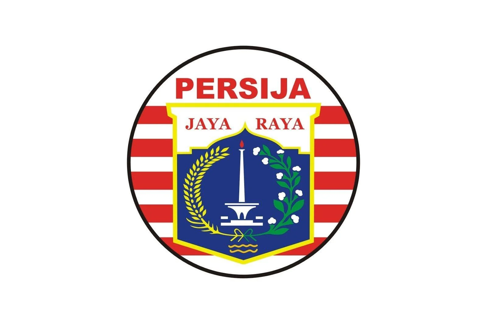

Persija (singkatan dari Persatuan Sepak Bola Indonesia Jakarta, dahulu pernah dikenal juga dengan nama Persija Pusat) adalah klub sepak bola profesional Indonesia yang berbasis di Jakarta, Indonesia. Klub ini didirikan pada 28 November 1928 dengan nama Voetbalbond Boemipoetera. Klub ini saat ini bermain di Liga 1 Indonesia dengan julukan terkenal klub ini Macan Kemayoran. Persija Jakarta merupakan klub dengan jumlah gelar terbanyak di Indonesia dengan total 9 gelar juara era Perserikatan dan 2 gelar era Liga Indonesia Profesional. Persija (VIJ) juga klub yang ikut serta dalam membentuk federasi sepak bola Indonesia PSSI pada tahun 1930. Persija juga merupakan klub yang belum pernah ter-degradasi di sejarah persepakbolaan Indonesia bersama dengan Persib Bandung dan PSM Makassar. Persija termasuk klub dengan finansial paling sulit di Indonesia, hal ini dikarenakan sulitnya sponsor yang mendukung klub ini.
